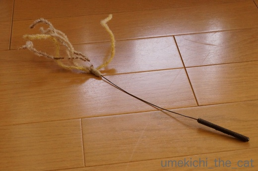
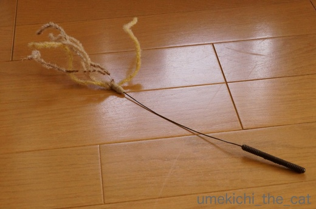

十五夜にはススキのおもちゃを [梅吉]
昨夜は十五夜、明日は満月。
梅吉さんはお気に入りのススキ風じゃらしで遊びましたよ。

使い込んでもうボロボロです^^;
遊び方も一工夫。自ら「きーーーーーーーっ！！！！」となる状況を作っております。
届かないねぇ(^▽^;) 不思議だねぇ(⌒_⌒;
･゜ﾟ･*:.｡..｡.:*･゜ﾟ･*:.｡. .｡.:*･゜ﾟ･*･゜ﾟ･*:.｡..｡.:*･゜ﾟ･*:.｡..｡.:*･゜ﾟ･* ･゜ﾟ･*:.｡..｡.:*･゜ﾟ･*:.｡. .｡.:*
先日ペットのおうちのIDタグの事を記事にしたのですが
記事を書いた後に梅吉の首輪にIDタグを付けてみると・・・嫌がられました(꒦ິ⌑꒦ີ)

IDタグは五円玉と同じ大きさでステンレス製。
まず五円玉大というのが梅吉ぐらいの体型（体重4.5Kg程）の猫には大きいかな、と感じました。
中型犬だと問題なさそうですが猫全般にはちょっと厳しいかもしれません。
（もちろん個体差はあるでしょう）
次にステンレスの材質が冷やっとして嫌そうな感じに見えました。
プラスチックだったら？とも思うのですが劣化の度合いや耐久性で
ステンレスが採用になったと思われます。
（米兵の認識票＝ドッグタグ、もステレンレスやアルミ素材ですよね。過酷な環境でも耐えられる。）
梅吉には日常的にIDタグをつけていて欲しいと思ったのですが
嫌がる様子を見ているとても我慢させる事は出来ませんでした。
が、せっかく発行されたID番号はどうにか生かしたいと思っています。
首輪にそうした情報を縫い付けてくれる製品もあるのでそちらを検討しようかな・・・
ちらっと検索してみるとPEPPYからこんな製品が出ていました。
日本では未発売ですが、外国ではGPS付き首輪なんていうのも出ているようですね。
ペットのおうちにはID検索の分かりにくさと、IDタグを嫌がりましたという件をあわせて
一利用者の声としてメールしておきました。
けっしてクレームではなく「良いシステムなので改善していただけるとありがたい」
という気持ちを込めて。。
梅吉がIDタグを嫌がったのも珍しいケースで
「全然平気でしたー」というニャンコもいらっしゃるかと思います。
あくまでも我が家の場合の出来事です。
ただ、もし申し込みを検討してらっしゃる方がいたら
「IDタグが付けられない」可能性も念頭においてね！
という記事でした。
 ↑ガブッと一押し↑
↑ガブッと一押し↑
近所の神社では観月祭が行われていました。
私は行かなかったのですが会社帰りのおっとがパチリ。
太鼓橋の頂点にお供え物があります。
いいねー、風情だねー。献茶や舞楽もあったようです。
神社の杜越しの月。
これは我が家のベランダから見えた月。
ん？何か飛んでますよ・・・(*>艸<)
業務連絡・・・ zombiekongさんにはもう少し手を加えた月の写真を送りつけちゃいます！
よかったら満月広場に使ってくださいね〜(๑˃̵ᴗ˂̵)و
梅吉さんはお気に入りのススキ風じゃらしで遊びましたよ。

使い込んでもうボロボロです^^;
遊び方も一工夫。自ら「きーーーーーーーっ！！！！」となる状況を作っております。
届かないねぇ(^▽^;) 不思議だねぇ(⌒_⌒;
･゜ﾟ･*:.｡..｡.:*･゜ﾟ･*:.｡. .｡.:*･゜ﾟ･*･゜ﾟ･*:.｡..｡.:*･゜ﾟ･*:.｡..｡.:*･゜ﾟ･* ･゜ﾟ･*:.｡..｡.:*･゜ﾟ･*:.｡. .｡.:*
先日ペットのおうちのIDタグの事を記事にしたのですが
記事を書いた後に梅吉の首輪にIDタグを付けてみると・・・嫌がられました(꒦ິ⌑꒦ີ)

IDタグは五円玉と同じ大きさでステンレス製。
まず五円玉大というのが梅吉ぐらいの体型（体重4.5Kg程）の猫には大きいかな、と感じました。
中型犬だと問題なさそうですが猫全般にはちょっと厳しいかもしれません。
（もちろん個体差はあるでしょう）
次にステンレスの材質が冷やっとして嫌そうな感じに見えました。
プラスチックだったら？とも思うのですが劣化の度合いや耐久性で
ステンレスが採用になったと思われます。
（米兵の認識票＝ドッグタグ、もステレンレスやアルミ素材ですよね。過酷な環境でも耐えられる。）
梅吉には日常的にIDタグをつけていて欲しいと思ったのですが
嫌がる様子を見ているとても我慢させる事は出来ませんでした。
が、せっかく発行されたID番号はどうにか生かしたいと思っています。
首輪にそうした情報を縫い付けてくれる製品もあるのでそちらを検討しようかな・・・
ちらっと検索してみるとPEPPYからこんな製品が出ていました。
日本では未発売ですが、外国ではGPS付き首輪なんていうのも出ているようですね。
ペットのおうちにはID検索の分かりにくさと、IDタグを嫌がりましたという件をあわせて
一利用者の声としてメールしておきました。
けっしてクレームではなく「良いシステムなので改善していただけるとありがたい」
という気持ちを込めて。。
梅吉がIDタグを嫌がったのも珍しいケースで
「全然平気でしたー」というニャンコもいらっしゃるかと思います。
あくまでも我が家の場合の出来事です。
ただ、もし申し込みを検討してらっしゃる方がいたら
「IDタグが付けられない」可能性も念頭においてね！
という記事でした。
近所の神社では観月祭が行われていました。
私は行かなかったのですが会社帰りのおっとがパチリ。
太鼓橋の頂点にお供え物があります。
いいねー、風情だねー。献茶や舞楽もあったようです。
神社の杜越しの月。
これは我が家のベランダから見えた月。
ん？何か飛んでますよ・・・(*>艸<)
業務連絡・・・ zombiekongさんにはもう少し手を加えた月の写真を送りつけちゃいます！
よかったら満月広場に使ってくださいね〜(๑˃̵ᴗ˂̵)و

カフェオレ色の梅吉

梅吉 2023年8月10日 永眠


梅吉と出会った譲渡会

犬猫の理由なき殺処分ゼロ
妄想広告
UMEKICHI 光

爆発的に早い！
時々攻撃的！
Thanks to Mr.Boss365
爆発的に早い！
時々攻撃的！
Thanks to Mr.Boss365

梅吉さん、自ら難易度を上げてお楽しみなんですね(^O^)
さすが「浪速の漢」はアクティブだなぁ＾＾
うちの大御所は寝転がったまま、じゃらしが近づくのを待ちますｗ
はっ、まさか梅吉さん、月に猫パンチをくらわせようとしてる訳じゃ^^;
by ニッキー (2017-10-05 16:36)
梅吉さん、惜しいですよ〜
もどかしさを、楽しんでいるとか（笑）
迷子札、残念でしたね。
ちぃさんは梅吉さんを、迷子にしないように気をつける人です（笑）
お月様に届きそうな梅吉さん、火を吹いてまっせ。
by kiki (2017-10-05 17:47)
なんて斬新な遊び方♪
可愛過ぎますよぉ～(*^_^*)
by きぃ (2017-10-05 18:17)
すすきのおもち良いですね～かなり遊んでいますね～小さいものでもやはり敏感なこはいや硝子りますね～
by みぃにゃん (2017-10-05 18:26)
業務連絡了解しました! 嬉しいです。お待ちしてます。
うちでは首輪がそもそも無理な子がいて(ドン)顎に首輪が挟まるアホな事故を2回も起こし、すぐに外れるタイプにしてもドンは挟まったまま外れなくて、ゴンはすぐに自分で外しちゃう。結局全員にICチップを埋め込んでいます。
by zombiekong (2017-10-05 19:33)
ビニール袋を使うのが斬新です。
これなら、猫じゃらしが長持ちしますね(^-^;
by riverwalk (2017-10-05 19:58)
昨日は中秋の名月でしたね！
梅吉さんタグをいやがったのですね(^^)
by ma2ma2 (2017-10-05 20:12)
わはは～レジ袋一枚でテンションさらにアップですね！
「なんでや？なんでや？なんで届けへんのや？？」というお顔が最高に可愛らしいです(*^▽^*)
IDタグは残念でしたね。
PEPPYさんの首輪に縫い付けるタイプのほうがまだこてつも可能性あるかな・・・嫌がっても子猫のうちから首輪に慣れさせれば良かったと激しく後悔中です(^▽^;)
昨夜はいい月夜でした♪
by ゆきち (2017-10-05 20:51)
梅吉君の斬新な遊び、手が汚れるオモチャにはぴったりだと思いました(そんなのあるのか？)。状況的にはビニール袋に入れた肉に、下味つけてる感じです。
IDタグ、デカイですね。ワンコにはいいけど、猫の大きさからすれば、金メダルつけて歩いてるようなものでしょう(多分)。なにか改善して頂けるといいですね。
by BillK-ko (2017-10-05 21:03)
すすき風オモチャ、好きそうですね～♪
なんと透明な袋で難易度アップ？さすが！
お月さまを狙うだけのことはありますね～＾＾
IDタグ、ワンちゃんと一緒なんですか。
猫は首も華奢だし‥梅吉さん細いもんねえ～重く感じちゃうかもね。
うちのは首輪すら無理で細いリボンしか受け付けなかったし‥＾＾；
by sana (2017-10-05 21:27)
ビニール袋（からの）アタック、とても機敏ですね！！
IDタグ、何かほかの軽いものから慣れさせるといいかもしれませんね。
ん？
月の横にスーパーニャン？^^;
by yes_hama (2017-10-05 22:07)
必死さがカワイイ〜(^^)フフ
お耳が動くんですねぇ！
王子はお耳動かないような気がします。
動画で撮ってみよう〜！
by も〜 (2017-10-05 22:16)
うわ！ネコゴコロをくすぐるおもちゃ！
うちのも間違いなく食いつきそう。（そして即破壊・・・）
そして、ストイックに自身を追い込む梅吉さん・・・(｡-_-｡)
迷子札は、以前お買い物時に無料でひとついただきました。
そっちのはアクリル製で、軽くて丈夫そうです。
（自分の記事で手前味噌ですが・・・
http://ja-kou66-blog.blog.so-net.ne.jp/2017-05-21）
中秋の名月、満月とは限らないって初めて知りました^^;
「お月見どろぼう」ってTrick or Treat的なならわしもあるそうで。
一番下の写真は・・・鉄腕ウメキチですか？（笑）
by Ja-Kou66 (2017-10-06 00:38)
ステンレスだと重く感じちゃうかもしれませんね。
「ココを直したらどう？」っていう意見は
どんどん言ってあげたほうが親切だと思います。
それをクレーマーだと思うような会社は
伸びないでしょうね＾＾；
by ぽちの輔 (2017-10-06 07:33)
いつも梅吉くん可愛いな～って思っているけど
動いているとまた、格別だよ～(^-^)
タグの使用後の感想は伝えた方がいいと思います。
付けられなくては意味がないですものね。
お月さまも美しい♪あれっ！？
ジェット梅吉飛んでる？鉄腕梅吉かな？？凛々しいｗ
by emi (2017-10-06 12:18)
これはいつまでたっても届きませんね。イライラする状況を作ってなお平常心を保つ修行でしょうか?ストイックですね(*^^*)
by palpal (2017-10-06 15:05)
「観月祭」かあ・・・素敵ですね。
にゃんこの瞳の中も満ち欠けするし♡
by Ginger (2017-10-06 16:25)
すすきに似たオモチャ、うちにもあるよー。
2代目ですｗｗ
梅吉君、届かずイカ耳になったりして可愛いぞ！！
IDタグ、うちは絶対嫌がるだろうなーって思ってるので
ハーネスに装着しました^^;
避難するときは有無を言わせずハーネス付けて避難だなって思ってるので。
Peppyさんの首輪、これは買ってないのですが
個人で首輪を作ってるサイトでこういうの買って用意してます^^
まずは仔猫時代に仔猫用のを買って、なかなか良かったので、大人になってから用のも用意してるの。名前と電話も入れてます^^
可愛い生地がいっぱいあって、どの模様が似合うか選ぶのにも相当悩むの(笑)
http://www.maomida.co.jp/index.html
by リュカ (2017-10-06 18:13)
ニッキーさん＞梅吉にはこのままアクティブに「チャレンジする精神」を
持ち続けて欲しいと思っています(*>艸<)
月にパンチの無謀な試みにもチャレンジしそうですよ！！
kikiさん＞もどかしさを楽しんで知るとしか思えませんよね^^;
自分がビニール越しではない時はじゃらしをビニール袋の中で動かすと
とても喜んでいただけますw
梅吉が迷子になってお腹をすかせていたり寂しい思いをしている・・・
なんて想像するだけで気がおかしくなりそうです (-_-メ)
自分の精神衛生上のためにも策は講じて置きたいと思っています(๑˃̵ᴗ˂̵)و
きぃさん＞そう来たかー！と思いましたよ (⌒_⌒;
にゃんこは（自分が）楽しいと思う遊びを見つける天才だなと思いました！
みぃにゃんさん＞梅吉は敏感とは程遠い神経の持ち主だと思っていたので
びっくりの顛末でした^^;
zombiekongさん＞梅吉は我が家に来てすぐに首輪
（髪を縛っても痛くない太いゴムを使った手作り首輪）
を付けさせたので今の首輪もすんなり受け入れてくれました＾＾
アゴに挟めちゃうのは前代猫がよくやっていました。。。
体を舐めているうちに挟まっちゃうみたいで結局首輪は付けませんでした。
それぞれの猫の性質によって反応は色々ですよね。
でもICチップがあるなら完璧ですよね〜。
ウチは埋め込むチャンスを逃してしまって残念です。
riverwalkさん＞確かにジャラシへのダメージは少ないですね＾＾
が、その後のがぶがぶでチャラになってしまいます^^;
ma2ma2さん＞我が家からは月がキレイに見えましたよ〜＾＾
首輪は、残念です・・・( ；∀；)
ゆきちさん＞レジ袋のカサカサ音が一段、さらに一段と
テンションを高めてくれるようです＾＾
我が家は広い家ではありませんが入り込む隙間はたくさんあります。
私はニャンコの居場所を常に把握していないと落ち着かないので
梅吉には我が家に来た直後から首輪をつけさせました。
そのため首輪は平気なのですがその他のブツが首から下がるのは
許せなかったようです (^▽^;)
BillK-koさん＞手が濡れる遊びにも良さそうですよね！！（梅吉はよくやるw)
ビニールに肉を入れている感じ(*>艸<)
私はラップで巻いて作る鳥ハム・・・？と思っていましたよー＾＾
タグはチャチャくんの体の大きさならバッチリ行けそうなのよ・・・
にゃんこにはちょっとねぇ。せめて一円玉大なら良いのになと思いました。
sanaさん＞レジ袋大好きな梅吉はいろいろな活用法を考えている様で^^;
IDタグ、
にゃんこは体を舐めるから余計に気にしちゃうんだと思うんですよね〜。
本当はICチップが一番良いと思うのですが我が家は埋めどき
（去勢手術の時入れるのが一番良いと）を逃してしまって・・・
もう少し悩ましい日々は続きそうです。。。
yes_hamaさん＞動画の音を消してしまったのですが
音付き動画だと「びしっ！びしいっっ！！」と鋭い音が入って
機敏さアップになっています(´▽｀)
徐々にでも慣れてもらうのが一番なのですが飼い主にも根気の必要な作業で・・・^^;
やっぱり首輪かなぁ、と考えを整理中ですww
も〜さん＞お耳、意外に雄弁です＾＾
途中のイカ耳「なんでやねん！」って心の叫びが聞こえて来そうです^^;
Ja-Kou66さん＞梅吉、なにか、こう、肉体的にも精神的にも
限界に挑んでいるように見える時が多いんです^^;
ブログネタには最高なのでいつまでもこのままで・・・と願ってます＾＾
アクリル製の迷子札の情報ありがとございます！！
一番小さいのはクローバーかな。
一円玉の大きさとの事、梅吉に一円玉つけて反応をみようかしら・・・
北海道には（私は札幌出身）お盆の頃に
「ろうそくだせー！」と言って子供が各家庭を回る習慣が
あります（ほぼ、過去形ですが）。
「出さないと引っ掻くぞ！」とおどして来るんですよー。。
いたずらするぞー！！の方が素直で可愛い気がします^^;
ぽちの輔さん＞そうですよね！
人間も企業も謙虚じゃないと・・・
さて、ペットのおうちからはどんな反応が返ってくる事やら・・・
emiさん＞ありがとうございます！！
梅吉は表情と仕草で勝負！！な猫なので動画が一番雰囲気と
「猫となり」が分かっていただけるかもしれません＾＾
IDタグは無料なのに文句言うなーー！！と思われるかな、
と遠慮しがちだったんですがそれはそれ、これはこれですよねー。
ちゃんとお客様の声、しておきました。。
夜空に飛んでるの、えーーーー！梅吉ってバレちゃった？(*>艸<)
「満月広場」には別な画像がアップされていますよー。
palpalさん＞梅吉、そのうち悟りを開きそうですわww
Gingerさん＞お空の月は雲で見えませんが梅吉の瞳は満月ですよ(^_－)☆
真っ黒いまんまる(^_－)☆
「観月祭」来年は参加してみようかな・・・
リュカさん＞お！ススキおもちゃ、お持ちでしたか＾＾
猫の琴線に触れるのか盛り上がってくれるよねー！
梅吉はハーネスを付けることが出来ないのよ^^;
「なんやー！このひもはーーー！！！」とじゃれてじゃれて・・・
ベストタイプも試したのですが「からだをこうそくするとはゆるせんっ」
とお怒りになるしwwwww
首輪情報ありがとう＾＾
柔らかい素材はうれしいわ！できるだけ負担を減らしてあげる事が出来るもの。
名前入れサービスを利用してもお手頃価格。
どれにしようかなーとすでに迷いに迷い始めていますw
by ちぃ (2017-10-06 22:43)
ロケット梅吉くんも、超クールですね＾＾
うちのあかりも、首輪の裏に油性ペンで名前と電話番号を書いて
つけようとしたのですが、嫌がってダメでした。
マジックで手書きって、ちょっとダサかったので
ペピイのは可愛くていいですね＾＾
ビニール袋ごしのススキじゃらし、可愛くて
笑ってしまいました( ´艸｀)
by マーヤ (2017-10-07 00:30)
本当に穂が出てしばらく経った後のススキみたい（笑）
名月は仕事で見てないので
拝ませていただきました。
by 響 (2017-10-07 01:47)
マーヤさん＞油性ペンは滲んだりするのでメンテが大変だそうですよー。
刺繍は？とも思ったのですがお針仕事はあまり得意じゃないし
細かい文字を判別できるように針を刺す自信がなかったのでやめました^^;
マーヤさんなら出来るかも！！
Ja-Kou66さんからは小さなアクリルのプレートを
https://item.rakuten.co.jp/petonavi/c/0000000366/
リュカさんからはオーダーメイドの首輪の情報を
http://www.maomida.co.jp/index.html
教えていただきました。一緒に悩みましょう(^_－)☆
響さん＞ズタボロのススキの再現率がすごいでしょう？(*>艸<)
満月の夜、各地で気象条件が良くなかったのでこちらで堪能していただいて
よかったです！！
by ちぃ (2017-10-07 15:20)
お耳の動きが~♪
いいですねいいですね♪
お月さまもきれい。
by ふにゃいの (2017-10-08 19:58)
ふにゃいのさん＞お耳、イカ耳になったり前にせり出したり・・・
感情の動きが耳にも良く表れていますよね〜＾＾
イカ耳時には「なんでやっ！」と吹き出しをつけたいくらいでしたよ〜。
ふにゃいのさん地方はお月様見えたでしょうか・・・
by ちぃ (2017-10-09 21:06)
IDタグ、悩ましいですよね。
我が家では小さいころから、首輪に高さ1センチのカプセルを付けてます。
中には、飼い主の名前と住所入り。
この首輪を、飼い主が居ないときだけ、つけています。
いるときは首輪はなしで、ストレスを軽減しているつもり（苦笑）
とはいえ、よく耳にするのは、迷子になったら痩せちゃうから、
首輪はすぽっと抜けてしまい、結局はＩＤが確認できないというもの。
となると埋め込み式のＩＤチップが確実だけど、いまいち躊躇してしまう。。。
何がベストなのか、なかなか難しいです。。。。
by morichan (2017-10-10 11:18)
morichanさん＞あ(・o・)そうですよね！すぐに保護してもらえる子は
稀なケースなんですよね・・・首輪も万能ではないと。
本当にこの問題は考えたらきりがないくらい悩ましくて・・・
できるだけの事はしつつある程度のところで楽観的にならないと
飼い主が参ってしまいそうです。
チップは去勢（避妊）手術の時に一緒に入れるのがベストなタイミングと言われていますよね。
梅吉の去勢手術の時はそんな事に考えが回っていなくてタイミングを失ってしまいました・・・
今更全身麻酔をしてチップを入れるというのは同じく私も躊躇してしまいます。
本当に悩ましい。。。
by ちぃ (2017-10-10 17:59)